Busca «stm32 bmp280». El repositorio ciastkolog/BMP280_STM32 tiene la librería y un ejemplo de uso.
Abre bmp280.c y bmp280.h, pulsa Raw y guarda cada uno (clic derecho → Guardar como) en una carpeta Libreria dentro de Core del proyecto.
No siempre hay que escribir la librería: también hay que saber usar y adaptar las de otros. Se usa la librería bmp280.c/.h de ciastkolog (BMP280_STM32 en GitHub). Casi todas las librerías de internet incluyen el HAL de un micro concreto (aquí stm32f0xx_hal.h); al cambiarlo por main.h funciona en cualquier STM32. Luego se copia el ejemplo del autor y se simplifica con uartx_write_text.
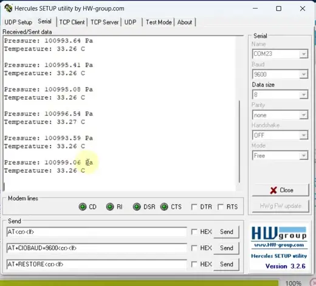
Busca «stm32 bmp280». El repositorio ciastkolog/BMP280_STM32 tiene la librería y un ejemplo de uso.
Abre bmp280.c y bmp280.h, pulsa Raw y guarda cada uno (clic derecho → Guardar como) en una carpeta Libreria dentro de Core del proyecto.
Proyecto para el STM32F401CC: HSE de 25 MHz y 84 MHz de HCLK, I2C1 por defecto y USART1 asíncrona a 9600.
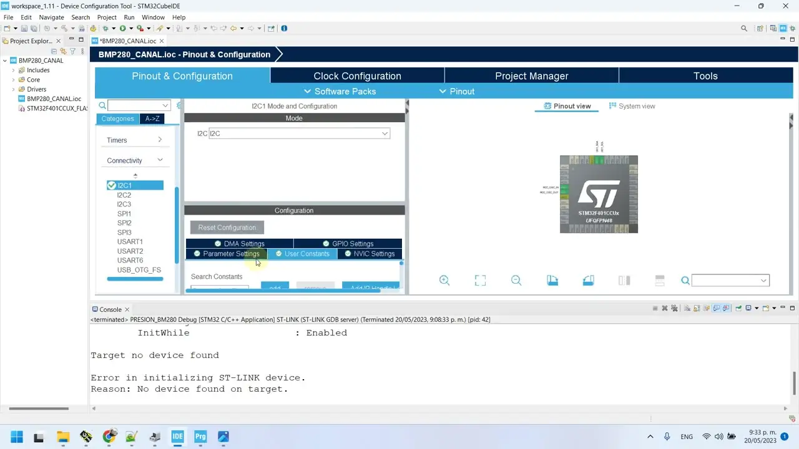
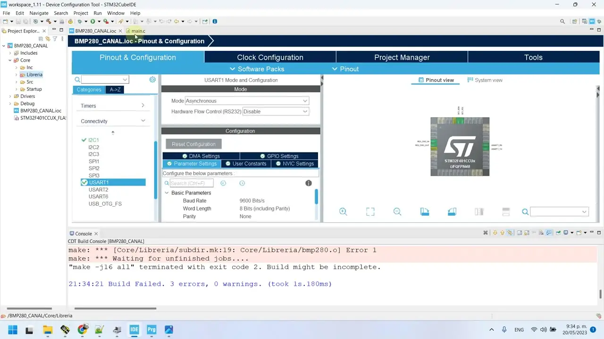
Agrega la carpeta Libreria al path. Aun así salen errores: el .h incluye el HAL de otra familia. Cámbialo por main.h, que ya incluye el HAL del micro con el que trabajas.
// en bmp280.h
// #include "stm32f0xx_hal.h" // original (STM32F0)
#include "main.h" // sirve para F1, F4 o cualquier STM32Este truco sirve para casi cualquier librería STM32 de internet: busca el include del HAL de la familia y cámbialo por main.h.
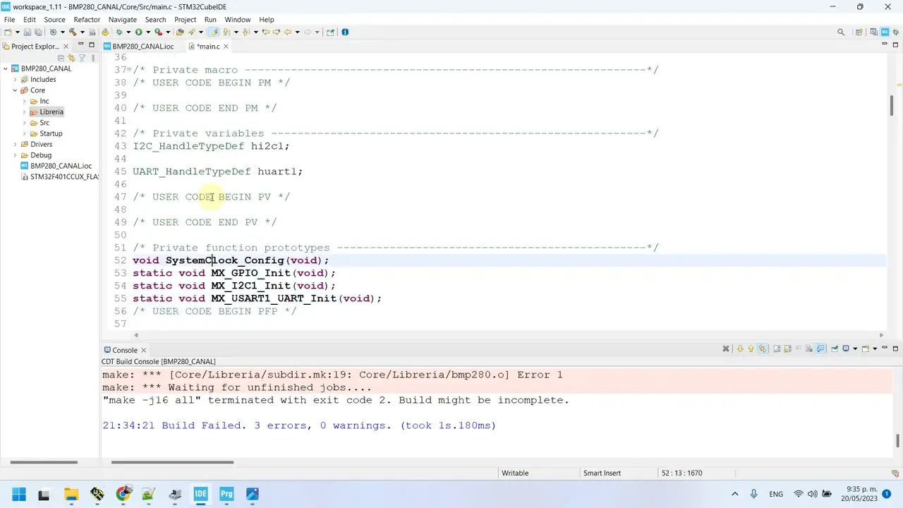
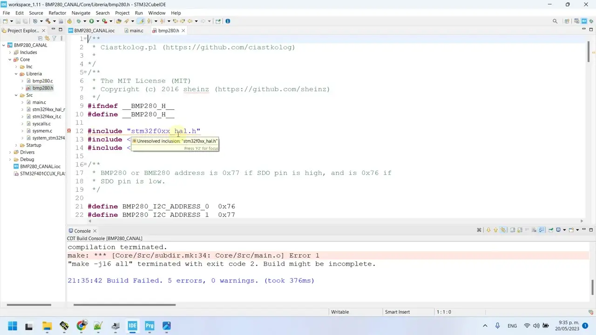
Activa también 'Use float with printf' en MCU Settings.
#include "bmp280.h"
#include "uart.h"
#include "stdio.h"
#include "string.h"
BMP280_HandleTypedef bmp280;
float pressure, temperature, humidity;
uint16_t size;
uint8_t Data[256];Del ejemplo del autor: parámetros por defecto, dirección I2C y el handle del I2C. Si no lo encuentra, reintenta cada 2 s. Luego indica si es BMP280 o BME280.
bmp280_init_default_params(&bmp280.params);
bmp280.addr = BMP280_I2C_ADDRESS_0; // 0x76 con SDO a tierra
bmp280.i2c = &hi2c1;
while (!bmp280_init(&bmp280, &bmp280.params))
{
sprintf((char *)Data, "BMP280 initialization failed\n");
uartx_write_text(&huart1, Data);
HAL_Delay(2000);
}
bool bme280p = bmp280.id == BME280_CHIP_ID;
sprintf((char *)Data, "BMP280: found %s\n", bme280p ? "BME280" : "BMP280");
uartx_write_text(&huart1, Data);El ejemplo original calcula size y usa HAL_UART_Transmit. Con la función del curso no hace falta: uartx_write_text calcula el largo sola.
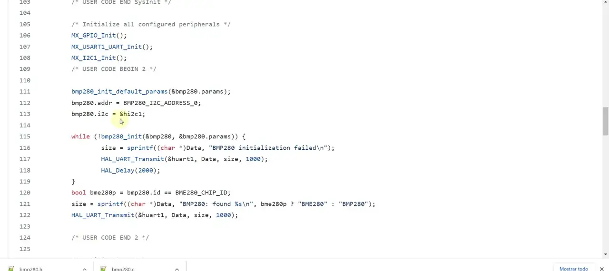
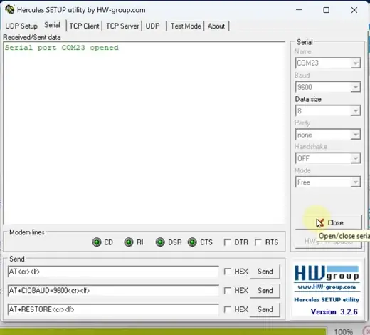
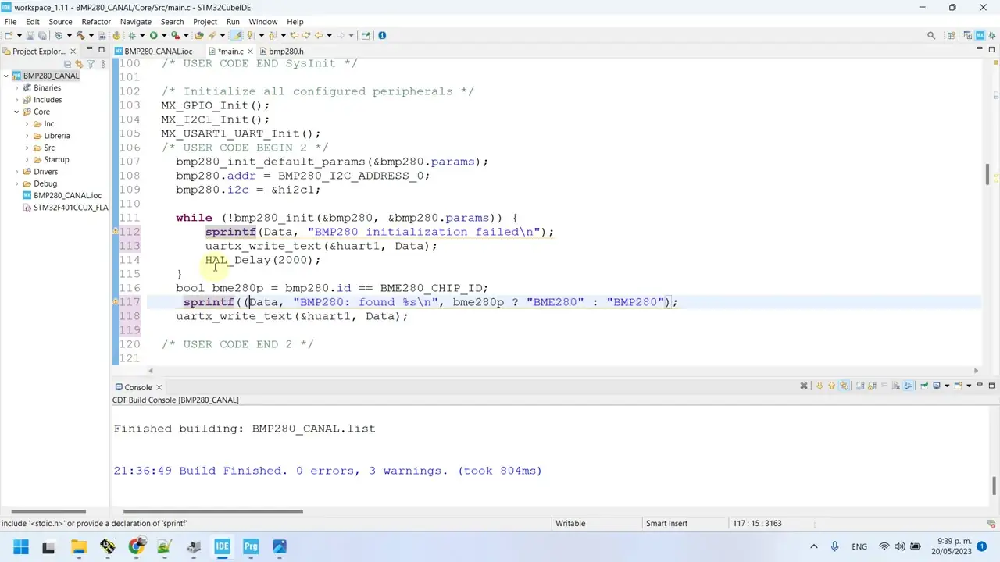
while (1)
{
HAL_Delay(100);
while (!bmp280_read_float(&bmp280, &temperature, &pressure, &humidity))
{
sprintf((char *)Data, "Temperature/pressure reading failed\n");
uartx_write_text(&huart1, Data);
HAL_Delay(2000);
}
sprintf((char *)Data, "Pressure: %.2f Pa\r\nTemperature: %.2f C\r\n\r\n",
pressure, temperature);
uartx_write_text(&huart1, Data);
HAL_Delay(500);
}El BMP280 no mide humedad, por eso se quita la parte de humidity del ejemplo. Con un BME280 puedes dejarla.
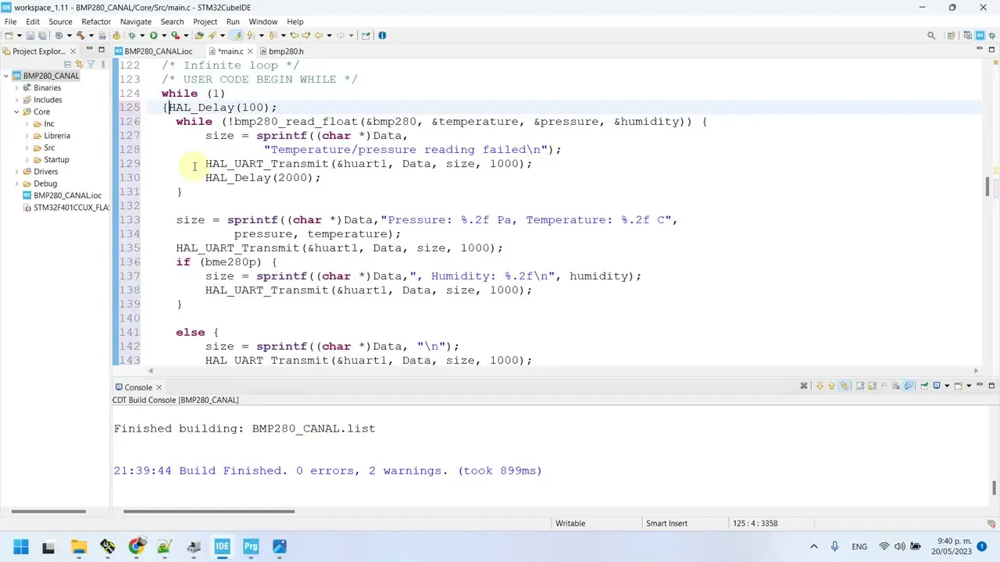
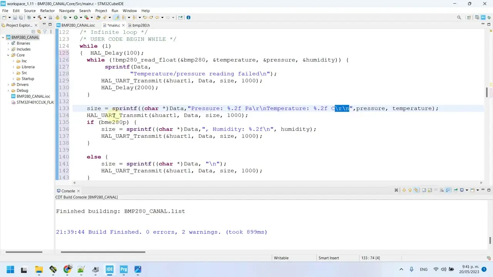
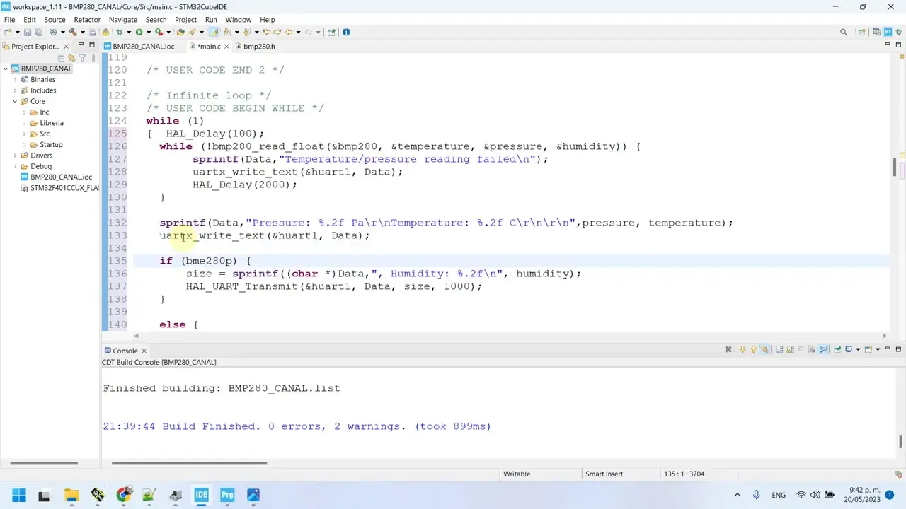
Unos 100 000 Pa (casi una atmósfera) y 33.26 °C en el momento de la prueba.